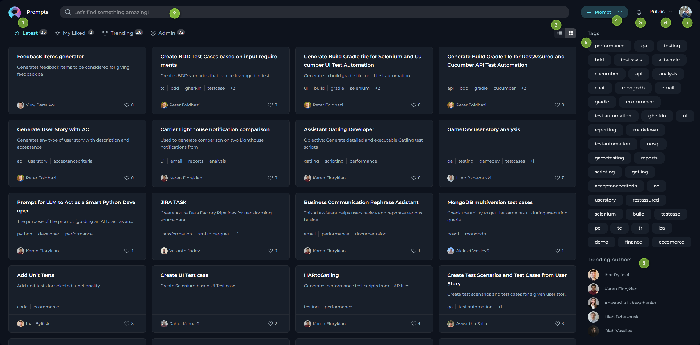
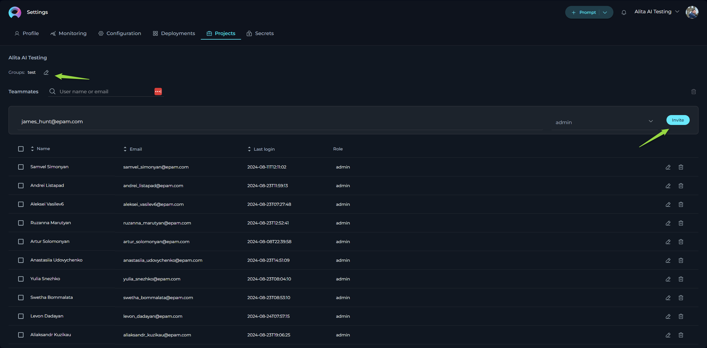

Introduction
Welcome to the ELITEA platform, an innovative web application that revolutionizes how you interact with Generative AI. ELITEA is not just a repository but a dynamic workspace designed to empower you to create, organize, and collaborate on prompts, datasources and agents like never before.
Key Features:
- Prompt Management: Effortlessly create, modify, and manage prompts. Keep track of different versions to ensure you always have access to your best work.
- Datasources: Play a pivotal role in enhancing the functionalities of ELITEA by integrating user-specific or project-specific data. This not only broadens the LLM's context but also enriches it with tailored information, making your interactions more relevant and insightful.
- Agents: Customize and create virtual assistants within ELITEA to handle specific tasks or sets of tasks. These agents integrate prompts, datasources, and external toolkits into a cohesive mechanism, enabling actions such as online searches or creating Jira tickets based on decisions made by LLMs.
- Chat: Combine all ELITEA features in one place with ELITEA Chat, an ultimate feature that allows for dynamic interaction and optimal results. Engage in conversations that utilize natural language to interact with human users and seamlessly integrate feedback from various participants like language models, datasources, and agents.
- Extensions: Transform your coding workflow with Alita Code and Alita Code Chat the ultimate AI-powered IDE extensions. Integrated seamlessly with VS Code and IntelliJ, these extensions offers intelligent suggestions, automates routine tasks, and provides unmatched adaptability to elevate your coding experience.
- Collection Integration: Organize your prompts, datasources and agents into Collections for better workflow management or to concentrate on specific themes or projects.
- Execution with Precision: Tailor the execution of prompts using various models and parameters to meet your specific needs, ensuring a customized experience.
- Advanced Creation Tools: Craft complex prompts, datasources and agents with precision using tools like variables, system prompts, Assistant Messages, and advanced tools.
- Powerful Search: Employ a robust search functionality to easily locate prompts, datasources and agents by tags, names, or descriptions.
- Community Engagement: Engage with the community by creating, modifying, and publishing prompts, datasources and agents. Enhance collaboration through sharing and liking content.
ELITEA is designed to be a versatile and powerful tool, enhancing how you interact with AI technologies and manage data-driven projects. Whether you're coding, creating content, or managing complex data sets, ELITEA provides the tools you need to succeed.
Let's embark on this journey to unlock the full potential of your ideas. Our user guide will walk you through every feature, ensuring you maximize your ELITEA experience.
Accessing ELITEA HUB
To access and navigate through ELITEA HUB, follow these steps:
- Open Your Browser: Launch your preferred web browser.
- Enter URL: Type
https://alita.lab.epam.cominto the address bar and press Enter. - Login: Use your EPAM account credentials to log in. Note: Registration is not required.
- Initial Navigation: Upon successful login, you will be directed to the Chat menu. Note: If this is your first time logging into ELITEA, please allow up to 5 minutes for the private project initialization to complete before you start creating prompts.
- Switch Projects: After the Private project is initialized, you can switch from the Public project to your Private project using the Project dropdown list, located at the top right next to your avatar.
- Explore ELITEA: Click on the ELITEA icon on the top left side to navigate among the available menus. Here, you can create and manage prompts, datasources, agents, and collections.
By following these steps, you will be able to effectively utilize the features and functionalities offered by ELITEA HUB.
Note: You need to enable Epam VPN to access ELITEA.

ELITEA - Main Interface
The ELITEA HUB's main interface encompasses several sections, including the Discover Menu, Search feature, Quick Navigation tabs, Settings, a Quick button for creating new items (conversation, prompt, datasource, agent and collection, importing prompt), Tags, and Trending Authors.
Sections:
- Discover Menu: A sidebar menu allowing users to switch among different menus such as Chat, Prompts, Datasources, Agents and Collections.
- Search: A Search box available to find prompts, datasources and agents by their names and descriptions. Note: The Search functionality operates within the selected menu and is not universal across the entire application.
- View Switcher: A tool for quickly switching between Card list and Table views.
- Quick button: A button that allows for the rapid creation of a new conversation, prompt, datasource, agent or collection. The default of this button (
+Conversation,+Prompt,+Datasource,+Agentor+Collection) changes based on the selected menu. - Notifications: Notification's bell allowing user to get notified about various events such as prompt publishing status within the ELITEA Hub.
- Project Switcher: A tool for quickly switching among projects.
- Settings: Accessible by clicking on your user avatar/picture. Here, you can configure various project and profile specific settings.
- Tags: This section displays the tags (categories) associated with the content being viewed. The tags vary depending on the selected menu.
- Trending Authors: Shows the authors who have recently contributed or shared the most trending prompts, datasources and agents with the community.

General Navigation and Management Across the Application
This section provides an overview of the common functionalities and actions available across various menus and pages within the application. The aim is to ensure a consistent and efficient user experience by maintaining uniformity in navigation and management features across both Private and Public projects.
Private Project Navigation:
In a Private project, you have exclusive access to your personalized content across the following menus:
- Chat menu: Access all your private and public conversations, allowing for seamless communication and collaboration.
- Prompts menu: View and manage all the prompts you have created, enabling easy modification and reuse.
- Datasources menu: Contains all the datasources you have developed.
- Agents menu: Access all your created agents, each designed to perform specific tasks or sets of tasks.
- Collections menu: Manage your collections of prompts, datasources, and agents, organized for specific projects or themes.
Public Project Navigation:
In a Public project, you can engage with the community and explore content created by other users through the following sections:
- Prompts menu: Navigate through the Latest prompts, explore prompts you've liked (My Likes), and discover Trending prompts within the community.
- Datasources menu: Access the Latest datasources, view datasources you've liked (My Likes), and explore Trending datasources shared by the community.
- Agents menu: Discover the Latest agents, check out agents you've liked (My Likes), and find Trending agents that are popular in the community.
- Collections menu: Explore the Latest collections, view collections you've liked (My Likes), and discover Trending collections that are gaining attention.
While the context may vary depending on the specific page you're viewing, the core principles of action and functionality remain consistent. This unified approach ensures that whether you are navigating a private or public project, the experience is intuitive and user-friendly, facilitating effective management and exploration of content within the application.
Common Viewing Options
- Card list view: Offers a compact, card-format snapshot of items like prompts, datasources, agents and collections, making it easy to visually scan through published materials.
- Table view: Provides an in-depth look at individual items, presenting extensive details for a comprehensive analysis.
Search and Filtering Functionality
- Search: Seamlessly locate specific items by their name or description using the search feature, which operates within the menu you are currently exploring. This tool is invaluable for quickly finding relevant content.
- Filtering: Streamline your search by filtering items using specific tags. This feature is especially useful for discovering content related to particular subjects or themes.
Sorting Options (Detailed View Only)
- Name & Description: Alphabetically organize published items by their names, providing an effortless method to find specific titles.
- Create: Sort items by their creation date to monitor the chronological development of content or pinpoint the newest additions.
- Likes: Order the items by the number of likes they have received. This functionality is applicable only for menus within Public project.
- Authors: Sort the items by the author's name. This functionality is applicable only for menus within Public project.
These standardized functionalities across different menus and pages are designed to simplify navigation and enhance the content management process within the application, promoting a coherent and user-friendly environment.
Discover - Menus
ELITEA application consists of the following main menus:
- Chat
- Prompts
- Datasources
- Agents
- Collections
Navigation:
- To naviagte among the menus, click the ELITEA icon on the top left.
- The Sidebar menu is opened.
- Click on the menu name to navigate to the desired menu.

Settings
The Settings is designed to offer you a centralized space to manage vital aspects of your account and configurations. This centralized space is accessible by clicking on your avatar located at the top right corner of the page.
The Settings consists of several tabs and settings each dedicated to specific functionalities:
- Profile: Customize your user profile within ELITEA.
- Monitoring: Keep track of usage statistics by selecting different metrics and timeframes.
- Configuration: Manage essential technical settings crucial for the smooth operation of ELITEA's features like Alita Code or Alita Code Chat.
- Deployments: Handle the management and launching of AI models or services linked to your ELITEA project.
- Projects: Manage users within project. This tab is only available for the user within admin permissions within the project.
- Theme: Switch between Dark and Light theme for the whole application.
- Log out: Securely log out from the ELITEA Hub.
Navigation:
To navigate through the Settings menus, follow these steps:
- Click on the Your Avatar icon located at the top right corner of the page to open the Sidebar menu.
- Select the desired tab by clicking on its name to navigate to that specific section.
Profile
In the Profile, you’re presented with options to personalize your account within ELITEA.
About me - fill in or update your personal details to ensure your ELITEA profile remains current. Note: Markdown is supported.

Monitoring
The Monitoring feature in ELITEA is designed to provide a comprehensive overview of the application's usage and performance. This feature is essential for administrators and users who want to gain insights into various aspects of the application, from user engagement to the effectiveness of configured artifacts like prompts, datasources, and agents. By leveraging the detailed charts and statistics available within the Monitoring feature, you can make informed decisions to optimize the performance and user experience of your ELITEA application.
This section will guide you through the various components of the Monitoring feature, including configuration options, key metrics, adoption and usage statistics, sentiment analysis, accuracy metrics, prompt topics, and topics summary. Each of these components offers valuable insights that can help you understand how the application is being used and how it can be improved.
Configuration Options
At the top of the Monitoring page, you have several options and settings to configure the charts and metrics you wish to monitor:
- Projects: A dropdown lits allowing you to select the project. Note: For your Private project, you can only see your private project data. If you have an admin role in another projects, you can select other projects to monitor.
- From and To Date Fields: These fields are used to select the time period for which you want to see the data.
- Type: A dropdown list allowing you to select among
Prompt,Datasource,Agent, andConversationto focus your monitoring on specific elements. - Name: A dropdown list to select specific items by name, such as created prompts, datasources, agents, or conversations.
- Users: A dropdown list to select which users' data you want to monitor. Note: For your private project, you can only see your own user data. If you have an admin role in another project, you can select other users to monitor.
To apply any changes or selections, click the Apply button. Use the Refresh button to update the monitoring data based on the latest activities and configurations.
Key Metrics
Below the configuration options, you'll find an overview of key metrics that give you a snapshot of the current state of the system:
- Users: The total number of users interacting with the ELITEA application.
- Tokens In: The number of tokens consumed by the ELITEA application.
- Tokens Out: The number of tokens generated by the ELITEA application.
- Gb Used: The amount of data processed by the ELITEA application.
- Prompts: The total number of prompts created.
- Datasources: The total number of datasources created.
- Agents: The total number of agents created.
- Conversations: The total number of conversations created.
These metrics are accompanied by a date range selector, allowing you to filter the data for a specific period.

Adoption and Usage
Below the key metrics, you'll find the Adoption and Usage section, which includes:
- Active Users: A bar chart displaying the number of active users over time.
- Token Usage: A line chart showing the tokens consumed (In) and generated (Out) over time.
These charts provide insights into user engagement and the application's token economy.
Sentiments
The Sentiments section provides a visual representation of the emotional tone of both user inputs and the outputs generated by LLMs. Understanding sentiment is crucial for tailoring responses to better meet user needs and improve overall interaction quality.
Sentiment Analysis Overview
Sentiment analysis categorizes text into three primary emotional states:
- Positive: Indicates a favorable or happy emotional tone.
- Negative: Indicates an unfavorable or unhappy emotional tone.
- Neutral: Indicates a neutral or indifferent emotional tone.
ELITEA performs sentiment analysis on user inputs to gauge the user's emotional state. This capability is particularly important for providing high-quality customer service, as the LLM can adjust its response tone and content based on the user's emotions.
Visual Representation
The Sentiments section includes two pie charts that offer a clear visual representation of sentiment distribution:
- Human Input: This pie chart shows the sentiment distribution of user inputs. It helps you understand how users are feeling when they interact with the LLMs.
- LLM Output: This pie chart displays the sentiment distribution of LLM's outputs. It helps you ensure that the responses generated by the LLM are appropriate and aligned with user emotions.
Practical Applications
Understanding sentiment can significantly enhance the user experience in several ways:
- Customer Service: By analyzing the sentiment of user inputs, LLMs can adjust its responses to be more empathetic and supportive, thereby improving customer satisfaction.
- User Engagement: Monitoring sentiment trends over time can help you identify patterns in user behavior and adjust your strategies accordingly.
- Content Moderation: Sentiment analysis can be used to flag potentially harmful or inappropriate content, ensuring a safer and more positive interaction environment.

Accuracy
The Accuracy section provides detailed insights into the performance and reliability of the ELITEA application. This section includes various metrics and visualizations that help you understand how well the system is responding to user inputs and how effective your configured artifacts (prompts, datasources, agents, conversations) are.
Relevance
The Relevance metric is divided into two key lines:
- Input vs Context: This line measures the relevance of the user's input (question or query) against the context of the artifact (prompt, datasource, agent or conversation). In the ELITEA, "context" refers to the configured instructions for the artifact. A higher relevance score indicates that the user's input closely matches the context, making it easier for the LLM to provide accurate responses.
- Output vs Input: This line measures the relevance of the generated output by the LLM against the user's input. A higher relevance score here indicates that the output is closely aligned with the user's query, ensuring that the response is appropriate and useful.
Note: The maximum value for relevance is 6. The higher the score, the better the relevance, indicating a more accurate and contextually appropriate interaction.
Reliability
The Reliability Score answers the question of whether there is enough context to respond accurately to the user's questions or queries. This metric helps you gauge the confidence level of the LLM's responses. Note: The maximum reliability score is 10. A higher score indicates that there is sufficient context to provide a correct and reliable response to the user's query.
Prompt Quality vs Usage
The Prompt Quality vs Usage is a 2x2 matrix that helps you evaluate the effectiveness and utilization of your artifacts (prompts, agents, datasources or conversations):
- Low Quality, Low Usage: Artifacts in this box have low quality scores and are rarely used. These artifacts may need to be re-evaluated or improved.
- High Quality, Low Usage: Artifacts in this box have high quality scores but are not frequently used. Efforts should be made to promote these high-quality artifacts to increase their usage.
- High Quality, High Usage: Artifacts in this box have high quality scores and are frequently used. These are your most effective artifacts and should be maintained.
- Low Quality, High Usage: Artifacts in this box have low quality scores but are frequently used. These artifacts should be improved in quality or their usage should be reduced in favor of higher-quality alternatives.
Matrix legend:
- Quality Score: The maximum quality score is 4. A higher score indicates better quality.
- Calls: This metric shows how many times an artifact has been used. Depending on the context (matrix box), a higher number of calls can be either positive or negative.
By analyzing these metrics, you can make informed decisions to improve the accuracy and reliability of your Alita AI application, ensuring a better user experience.
Prompt Topics
The Prompt Topics section provides an automatic classification of the available artifacts (prompts, datasources, and agents) within the Alita AI application. This section helps you understand the distribution and focus areas of your artifacts, enabling you to identify trends and gaps in your content.
Chart Components
The Prompt Topics section displays a clustered column chart that categorizes your artifacts by topic. This visual representation allows you to quickly see how many prompts, datasources, or agents are associated with each topic. The clustered column chart includes the following components:
- Items: Indicates the number of artifacts associated with each topic.
- Topic Name: Displays the name of each topic, helping you identify the subject matter of your artifacts.
Practical Applications
Understanding the distribution of your artifacts across different topics can provide several benefits:
- Content Gaps: Identify topics with fewer artifacts, indicating potential areas where additional content may be needed.
- Content Focus: Recognize topics with a high number of artifacts, helping you understand the primary focus areas of your users.
- Resource Allocation: Allocate resources more effectively by focusing on topics that require more attention or improvement.

By leveraging the insights provided by the Prompt Topics section, you can ensure that your application covers a comprehensive range of topics, enhancing the overall user experience and effectiveness of the application.
Topics Summary
The Topics Summary section provides an automatic classification of user inputs, categorizing the topics that users have queried or questioned about. This section helps you understand user interests and the most frequently discussed topics within ELITEA.
Chart Components
The Topics Summary section displays a clustered column chart that categorizes user inputs by topic. This visual representation allows you to quickly see how many times users have queried information for each topic within a selected timeframe. The clustered column chart includes the following components:
- Items: Indicates the number of user queries associated with each topic.
- Topic Name: Displays the name of each topic, helping you identify the subject matter of user queries.
Practical Applications
Understanding the distribution of user queries across different topics can provide several benefits:
- User Interests: Identify the topics that users are most interested in, allowing you to tailor your content and responses to better meet their needs.
- Content Gaps: Recognize topics with fewer user queries, indicating potential areas where additional content or promotion may be needed.
- Trend Analysis: Monitor how user interests evolve over time, helping you stay ahead of emerging trends and adjust your strategies accordingly.
By leveraging the insights provided by the Topics Summary section, you can ensure that ELITEA is aligned with user interests, enhancing the overall user experience and effectiveness of the application.

The Monitoring feature in ELITEA offers a robust set of tools and metrics to help you understand the performance and usage of your application. By utilizing the various charts and statistics available, you can gain valuable insights into user engagement, sentiment, accuracy, and the distribution of topics within your project. These insights are crucial for making data-driven decisions that can enhance the overall user experience and effectiveness of your ELITEA application.
Whether you are looking to improve customer's experience through sentiment analysis, optimize the relevance and reliability of LLM responses, or identify content gaps and user interests, the Monitoring feature provides the necessary data to guide your efforts. By regularly reviewing and analyzing these metrics, you can ensure that your project remains aligned with user needs and continues to perform at its best. By leveraging the comprehensive monitoring capabilities of ELITEA, you can create a more responsive, efficient, and user-friendly application, ultimately leading to higher user satisfaction and better overall performance.
Configuration
The Configuration page serves as the nucleus for managing essential technical settings that enable the smooth operation of ELITEA's features, such as Alita Code or Alita Code Chat. Note: The available settings and configurations may vary depending on the project selected. It's important to select the appropriate project from the project dropdown menu to access specific configurations relevant to that project.
- URL - this is the base web address through which you interact with ELITEA’s services. It's a crucial link for all your API calls or web requests.
- Project ID & Integration UID - unique identifiers for your project and integration instances. These are required when setting up or customizing ELITEA’s services to work within your specific project environment.
- Integration Options - allows to select and display available LLMs and Embeddings integrated with your deployments.
- Model Name - displays the correct name of selected integration option
- Personal Tokens - access tokens are your key to secure communication with ELITEA's backend. Here, you can generate tokens that authorize your applications or scripts to perform operations on behalf of your account. Treat these tokens with care and keep them confidential.
To create a token:
- Click the
+icon to create a new token. - Enter a name and set an expiration date for the token.
- Click Generate to create the token.
- Immediately copy and securely store the generated token; it will not be visible again once you close the pop-up window.
- From the Integration Option dropdown list, select the desired LLM model (e.g., gpt-4, gpt-4o, gpt-4-0125-preview, etc.).
- Once the LLM model is selected, the Download VS Code Settings and the Download Jetbrains Settings icons will appear next to the created token. This allows you to download the configuration files to integrate and configure the ELITEA HUB project with Alita Code extensions on VSCode and IntelliJ respectively. For more information about how to setup it, please refer to the Alita Code Documentation.

Deployments
The Deployments page is all about managing and launching AI models or services that you’ve connected to your ELITEA project. Note: The available settings and configurations may vary depending on the project selected. It's important to select the appropriate project from the project dropdown menu to access specific configurations relevant to that project.
- Available Deployments - view a list of current AI deployments, such as AI Dial or Hugging Face, that have been linked to your project. This snapshot gives you quick access to manage these integrations.
- Creating New Deployments - while the possibility exists to set up new deployments, it’s a process that requires coordination with the ELITEA team. This is to ensure seamless integration and avoid potential conflicts with existing configurations.
Creating a New Deployment for EPAM AI Dial
To set up a new deployment for EPAM AI Dial within your system, follow these detailed steps:
- Obtain API Key: Important: Before proceeding, you must obtain a separate API Key from the EPAM DIAL team. This key is essential for authenticating and enabling communication with the AI Dial services.
- API Key Retrieval: Once you have received the API Key and any additional required information via email, return to this page to input these details.
- Initiate Deployment Creation: Click the
+icon to start creating a new deployment. - Select Deployment Type: From the list of available deployment types, select
AI Dial. - Configure Deployment Details: In the configuration window, fill in the following information:
- Name: Enter a descriptive name for the deployment. This name will be displayed alongside LLM models configured with this deployment.
- API Base: For EPAM AI Dial, use
https://ai-proxy.lab.epam.comas the API Base. - Secret API Key: Paste the API Key that you received from the AI Dial team.
- API Version: Enter the API version information provided by the AI Dial team.
- Add Models to Deployment:
- Click the
+icon to add one or more models associated with this deployment. For each model, provide the model's name, maximum input tokens, and capabilities. - Important: Ensure that you enter the correct model name as used in EPAM AI DIAL. For detailed information on model specifications and configurations, refer to the EPAM AI Dial documentation.
- Click the
- Click Save to complete the creation of the deployment.
By following these steps, you can successfully create and configure a new deployment for EPAM AI Dial, enabling you to leverage advanced capabilities within your projects.

Projects
The Projects menu is specifically designed for administrators and becomes accessible when you hold administrative privileges in any project other than your private project within ELITEA. Note: It's important to select the appropriate project from the project dropdown menu to access specific configurations relevant to that project.
Groups
The Groups feature in ELITEA is designed to facilitate efficient management and monitoring of multiple projects by admins or managers. This feature allows you to consolidate several projects under a single group, making it easier to oversee and coordinate activities across these projects. If you are an admin of two or more projects, you can leverage the Groups feature to organize and monitor your projects collectively:
- Create a New Group: Click the Pencil icon to initiate the creation of a new group. You will be prompted to name the group and select the projects you wish to include.
- Add Projects to Existing Group: If you already have established groups, you can add additional projects to these groups.
This grouping functionality not only simplifies the administrative workload but also enhances the visibility and control over multiple projects, enabling more effective management and monitoring.
Teammates
The Teammates feature in ELITEA is specifically crafted to streamline the process of collaborating within projects by allowing you to invite new users (teammates) and assign them appropriate roles. These roles include system, admin, editor, and viewer, each providing different levels of access and control within the project. Note: Only users with an admin role are empowered to invite new members. This ensures that the invitation and role assignment process is managed by users with appropriate authority and understanding of the project’s needs.
Inviting New Teammates:
- Enter the prospective member's email address in the Email Address input field.
- Select their role from the Role dropdown menu.
- Click the Invite button.
- An invitation will be sent, and upon their first login, their details will be added to the Teammates, activating their account.

Notes
- Multiple users can be invited simultaneously by separating email addresses with a comma.
- For Epam projects, use the invitee's Epam email. For customer projects, the customer's Active Directory is utilized for invitations.
Managing Teammates:
The Teammates table displays all members, their roles, and their last login information. Admins can modify a user's role or revoke access by clicking the respective Edit or Delete icons next to a user's name.
Secrets
The Secrets feature in ELITEA serves as a secure vault designed to store and manage sensitive information such as passwords, tokens, API keys, and other authentication details. This centralized system allows you to configure secrets once and utilize them across various components, such as Agent's toolkits within ELITEA HUB.
Creating a Secret:
To add a new secret to the vault, follow these steps:
- Click the
+icon to initiate the creation of a new secret. - Enter a descriptive name for the secret to help you identify its use.
- In the Value field, input the token, password, API key, or any other authentication details.
- Once configured, this secret can now be selected and used within various components of ELITEA HUB.
Managing Secrets:
The management of secrets is straightforward and secure, facilitated by the Secrets table which displays all your configured secrets:
- View Secret: Click the Eye icon to reveal the value of a configured secret. This allows you to quickly check the details without modifying them.
- Copy Secret: Easily copy the secret value to your clipboard (by clicking the hidden value) for use in configurations or integrations.
- Hide Secret: Hide the secret from the interface to maintain security when not actively managing the secret.
- Modify Secret: Update the value of the secret if the existing credentials change or need to be corrected.
- Delete Secret: Remove a secret permanently from the vault if it is no longer needed or if security concerns necessitate its deletion.
This feature enhances the security and efficiency of managing sensitive information within ELITEA, ensuring that authentication details are handled in a secure, centralized manner.